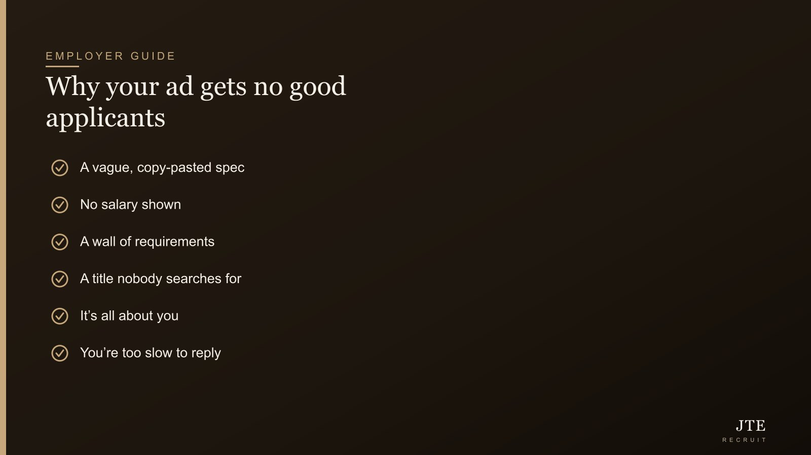

Short answer: it’s almost always the ad, not the market. When a role pulls in silence or a pile of people who clearly didn’t read it, the instinct is to blame the market — “cannot find people these days”. But nine times out of ten, the fix is sitting in your own advert. The usual culprits: a vague, copy-pasted spec; a salary you won’t show; a wall of “requirements”; a title nobody actually searches; an ad that talks about you instead of them; and a process so slow the good ones are gone before you reply. Let’s go through each — because I read these ads all day, and the same few mistakes come up again and again.

First, the mindset: the ad is the problem, not the market
Here’s the uncomfortable bit. Good people are always in short supply, but they don’t vanish — they just don’t apply to your ad, because something in it told them not to bother. Decent candidates are quietly scanning a dozen listings and deciding in seconds which ones are worth their time. If yours keeps losing that split-second, the market isn’t the issue — your shop window is. Fix the window and the same “impossible” role suddenly starts pulling people.
Culprit 1: a vague, copy-pasted spec
Most job ads are copied from the last one, which was copied from the one before — so they end up as a generic list that could describe fifty different jobs. A good candidate reads that and goes blur (can’t make sense of it), then moves on. The fix is simple: say what the person will actually do. “Own the preventive maintenance schedule for our packing lines and bring down unplanned downtime” beats “responsible for maintenance duties” every time, because a real engineer can picture the job and go “yes, that’s me”.
Culprit 2: you’re hiding the salary
This one is very Singapore, and I’ll say it plainly: leaving out the salary quietly kills your ad. Good candidates, especially the ones already employed and only half-looking, will not waste time on a listing with no number — they assume the worst and scroll on. You don’t need to publish an exact figure; a fair, honest range is enough to signal you’re serious and not going to lowball. Our salary guide and our breakdown of what a good engineer costs help you set a range that actually attracts rather than filters people out.
Culprit 3: the wall of requirements
The longer your “must-have” list, the fewer good people apply — and the ironic part is the strong ones drop off first, because they read carefully and disqualify themselves, while the ones who apply to everything don’t care. Split your list honestly into genuine must-haves and nice-to-haves, and keep the must-haves short. If you wouldn’t reject an otherwise perfect candidate for missing it, it’s not a must-have — move it down or cut it.
Culprit 4: a title nobody searches for
Fancy internal titles are a quiet killer. If you advertise for a “Maintenance Ninja” or a “People & Culture Enabler”, nobody is typing that into a job search, so your ad simply never shows up. Use the plain title people actually search — Maintenance Engineer, HR Executive — even if your internal name is snazzier. This is basic search visibility, and it’s free.
Culprit 5: the ad is all about you
Most ads open with three paragraphs about how established and dynamic the company is, then a long list of what they demand from the candidate. Flip it. The person reading is asking one question: what’s in it for me? Tell them — the work they’ll get to do, what they’ll learn, who they’ll work with, why people stay. You’re not begging; you’re selling a good opportunity to someone who has options. Treat them like they have options, because the good ones do.
Culprit 6: you’re too slow to reply
You can write the perfect ad and still lose everyone by dragging your feet. Good candidates are often kiasu — scared to lose out — so when a solid offer lands, they take it rather than wait around for you. If your process takes three weeks to send a first reply, you’re not competing for the good ones, you’re competing for whoever is still available at the end. Reply fast, even if it’s just to acknowledge, and keep things moving. Speed is one of the cheapest advantages an SME has over a slow, layered MNC — use it.
Where you post matters as much as what you post
A perfect ad in the wrong place still gets you nothing. Different roles live in different pools — some trades and operational roles do well on the big job boards, more senior or specialist people are barely there and are found on LinkedIn or through direct approach, and a lot of the best engineers aren’t on any board at all because they’re simply not looking. Match the channel to the role. And if the people you want genuinely aren’t applying anywhere — which is common for scarce, in-demand skills — then no ad, however good, will reach them, and you’re into the territory of going out to find them directly, which is a big part of what a recruiter is actually for.
Rewrite one line and watch what happens
You don’t need to redo everything at once — small changes move the needle. Take your opening line. “We are a leading provider of integrated solutions seeking a motivated individual…” says nothing and sounds like every other ad on the page. Swap it for something real: “We’re a 30-person manufacturer in Tuas, and our production line has outgrown one maintenance engineer — we need a second.” Suddenly a candidate knows exactly what the job is, where it is, and why it exists. Do that for the title, the first line and the salary, and you’ve fixed most of the ad in an afternoon.
When it genuinely IS the pay or the market
Sometimes, after all that, it really is the number or a genuinely thin talent pool — some niche skills are just scarce (we wrote about that for automation engineers and process engineers). The tell is simple: if you’ve fixed the ad, shown a fair salary, and moved quickly, and you’re still getting nothing, then it’s a pay or scarcity problem, not an ad problem — and that’s a different conversation about budget, or about reaching the people who aren’t applying to anyone’s ad. But fix the ad first. It’s free, and most of the time it’s the whole answer.
Frequently asked questions
Why is no one applying to my job posting?
Usually the ad, not the market. The common reasons: a vague or copy-pasted description, no salary shown, too many “must-have” requirements, a title nobody searches for, an ad that’s all about the company, or a hiring process so slow good people are gone before you reply. Fix those first before blaming the talent pool.
Should I put the salary in a job ad in Singapore?
Yes — or at least an honest range. Many good candidates, especially those already employed, skip listings with no salary because they assume the worst. A fair range signals you’re serious and filters in the right people rather than scaring them off.
How many requirements should a job ad have?
Keep the genuine must-haves short — ideally a handful — and put everything else under nice-to-haves. Long requirement lists disproportionately scare off strong candidates, who read carefully and disqualify themselves, while weaker scattergun applicants ignore them anyway.
What makes a good job title for a listing?
The plain title people actually type into a search — Maintenance Engineer, HR Executive — not a fancy internal name. If nobody searches your title, your ad never shows up, no matter how good the rest of it is.
How fast should I respond to applicants?
As fast as you can — ideally within a day or two, even if it’s just an acknowledgement. Good candidates often take the first solid offer rather than wait, so a slow process quietly loses you the best people. Speed is a real edge SMEs have over slower MNCs.
Is it my ad or the market that’s the problem?
Fix the ad first — clear spec, fair salary shown, short must-haves, searchable title, fast replies. If you’ve done all that and still get nothing, then it’s likely a genuine pay or scarcity issue, which is a different conversation about budget or reaching passive candidates.
If you’ve tidied up the ad and the right people still aren’t coming — or you’d rather not spend weeks writing and re-writing listings — that’s where we come in. We reach the good people who aren’t scrolling job boards at all, and we’ll tell you honestly whether it’s your ad, your offer, or the market. Have a chat with us. More on what a good recruiter actually does.